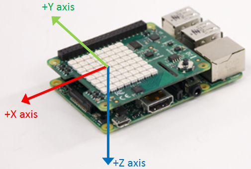

Measure linear acceleration, angular rate and magnetic field along X, Y, and Z axis
Measure the linear acceleration, angular rate, and magnetic field using the 9–DoF IMU (Inertial Measurement Unit) sensor on board Raspberry Pi™ SenseHAT.
The IMU sensor (LSM9DS1) comprises accelerometer, gyroscope, and a magnetometer. Using this block, you can measure the inertial motion of the Raspberry Pi on top of which the SenseHAT is connected.
Choose the desired active sensor(s) to measure angular velocity, acceleration, magnetic field, or a combination of the these measurements.
The block outputs acceleration as [1x3] vector values of double data type in ‘g’ (9.8 m/s^2), angular rate as [1x3] vector values of double data type in ‘degrees per second’ (dps), and magnetic field as [1x3] vector values of double data type in micro Tesla (µT).
You can optionally apply specific advanced settings to customize the sensor behavior according to your needs.
The axis information of the IMU sensor on SenseHAT is as shown.
